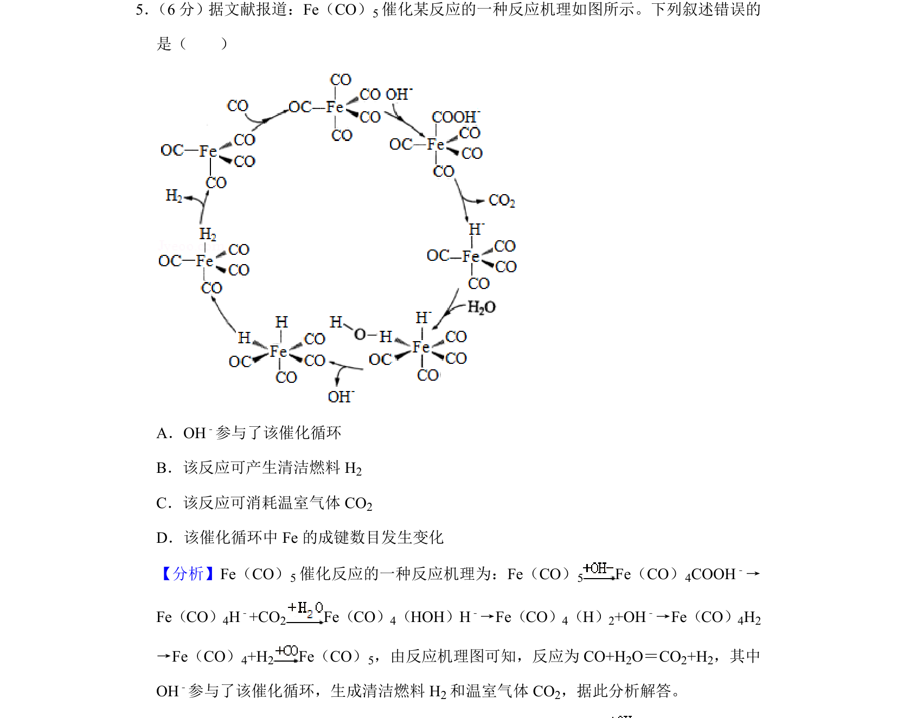
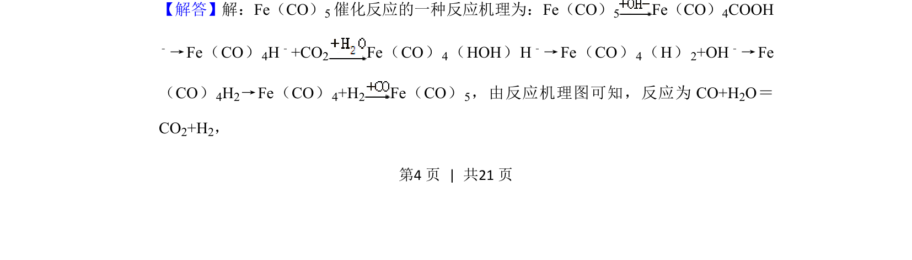
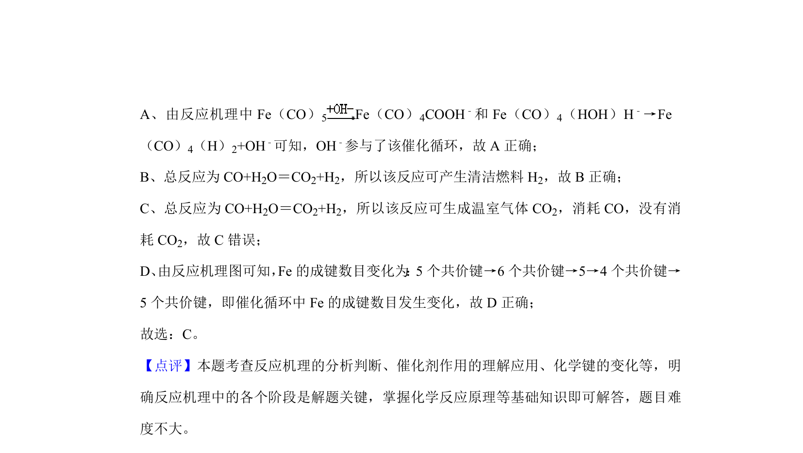

考点：催化循环 反应机理 化学键 方程式分析

本题考查催化反应机理的分析与判断，涉及催化剂循环和化学键变化。


📄 原 PDF 第 4 页：
素材/真题/吉林/2008-2024·（吉林）化学高考真题/2020年高考化学试卷（新课标Ⅱ）（解析卷）.pdf
5． （6分）据文献报道：Fe（CO）5催化某反应的一种反应机理如图所示。下列叙述错误的 是（ ） A．OH﹣参与了该催化循环 B．该反应可产生清洁燃料H 2 C．该反应可消耗温室气体CO 2 D．该催化循环中Fe的成键数目发生变化
【分析】Fe（CO）5催化反应的一种反应机理为：Fe（CO） 5 Fe（CO）4COOH﹣→ Fe（CO）4H﹣+CO2 Fe（CO）4（HOH）H﹣→Fe（CO）4（H）2+OH﹣→Fe（CO）4H2 →Fe（CO）4+H2 Fe（CO）5，由反应机理图可知，反应为CO+H 2O＝CO2+H2，其中 OH﹣参与了该催化循环，生成清洁燃料H 2和温室气体CO 2，据此分析解答。 【解答】解：Fe（CO）5催化反应的一种反应机理为：Fe（CO）5 Fe（CO）4COOH ﹣→Fe（CO） 4H﹣+CO2 Fe（CO） 4（HOH）H ﹣→Fe（CO） 4（H） 2+OH﹣→Fe （CO） 4H2→Fe（CO） 4+H2 Fe（CO） 5，由反应机理图可知，反应为CO+H 2O＝ CO2+H2，